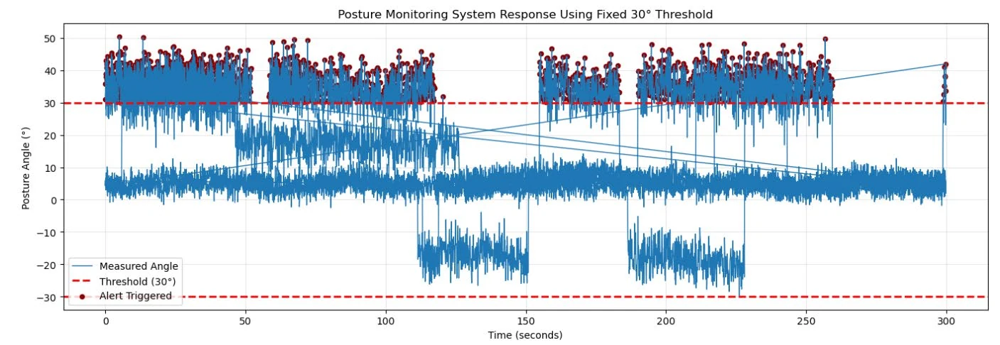

A Sensor-Based Posture Detection System Towards Ergonomic Health Improvement
Research problem
Long hours on smartphones, tablets, and computers contribute to neck and back pain. Continuous monitoring and timely correction of sitting posture can lower musculoskeletal discomfort.
Methodology
A waist-worn smart belt carries an MPU-6050 inertial measurement unit (tri-axial accelerometer and gyroscope) connected to an ESP32 microcontroller. A vibration motor gives corrective feedback, and data travels over Wi-Fi to a cloud server and Android and iOS apps.
Computational approach
IMU data are sampled at 10 Hz and fused with a complementary filter:
θt = α(θt−1 + ω·Δt) + (1 − α)θacc
A deviation of more than 30° from a calibrated upright baseline for more than 5 seconds is classified as bad posture.
Results
Five participants produced about 19,500 samples across structured and natural sitting sessions. Threshold-based classification exceeded 90% accuracy for every posture: upright about 96%, slouched about 94%, right lean about 91%, and left lean about 92%.
Contribution
A relatively inexpensive, easy-to-use system that combines wearable sensing, real-time haptic feedback, and cloud and mobile analytics to build ergonomic awareness. The paper outlines next steps: adaptive thresholds, signal smoothing, and a second IMU for forward-head posture.

